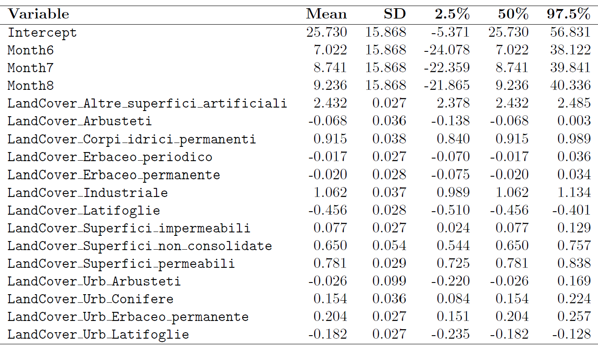

The table below presents the posterior estimates (mean, standard deviation, and 95% credible intervals) for the fixed effects included in the model.
Land cover categories and urban classifications were derived from ISPRA datasets
(ISPRA Land Use and Land Cover).
These covariates represent the land cover category of each 30m pixel (reference category: Conifere).
